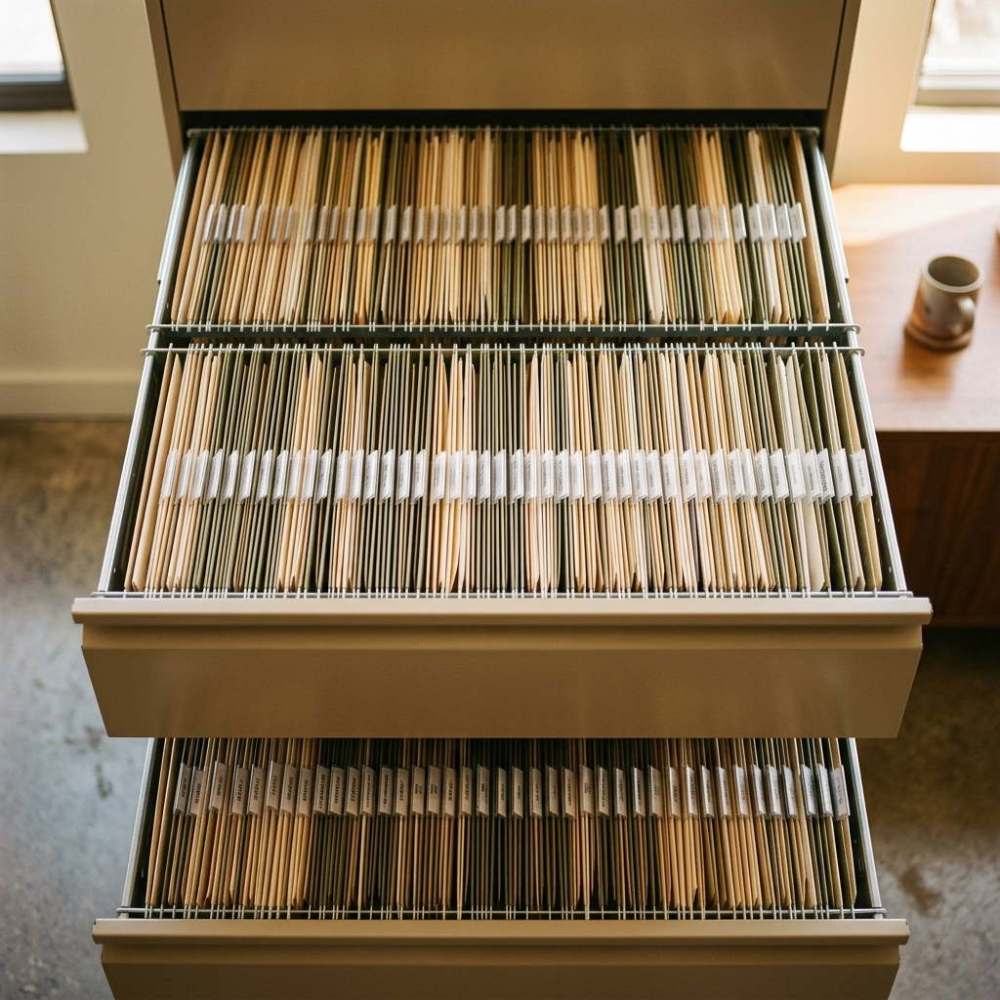

Sivaporn Phumimit
IT Support Specialist based in Bangkok
Core Skills
End User Support
Comprehensive hardware/software troubleshooting, ticketing, and empowering users across corporate environments.
IT Infrastructure
Administration of Active Directory, Microsoft 365, network monitoring, and enterprise security management.
AI & Automation
Leveraging AI tools and writing scripts to streamline manual workflows, reduce errors, and improve overall efficiency.
About
Hi, I’m Kim I build reliable IT environments and provide seamless support to keep businesses running smoothly.
With 6+ years of experience from monitoring enterprise systems to serving as the primary IT backbone for an entire Thailand office, I specialize in end-to-end IT operations. My expertise spans hardware/network troubleshooting, cloud administration, and supporting internal business applications. I am detail-oriented, proactive, and passionate about leveraging automation and cross-team collaboration to deliver a flawless technology experience.
Find me online
Experience
Senior Staff — IT Support
SMFL Leasing Thailand- Primary IT support for 85+ users in Thailand office
- Support Windows PCs, laptops, printers, meeting rooms, mobile devices
- Manage Active Directory on-premise accounts, shared folder permissions
- Develop internal tools and small web applications to improve workflows
IT Support
Cloud HM- Supported Microsoft 365 and Azure AD user administration
- Managed device setup, software installation, and hardware deployment
- Provided ticket-based IT support and resolved user incidents
IT Support
MFEC (KTC Bank)- Managed and administered IT operations tools including SolarWinds and ServiceNow
- Coordinated network monitoring, incident reporting, and IT operations governance
Technical Tool Specialist
MFEC (KBTG)- Monitored batch job execution on OPEN/Mainframe platforms
- Supported Network Operation Center (NOC) operations
Key Projects
Internal tools — deployed on Docker / Linux
IT Helpdesk & Asset Management
PDF Toolkit
Internal Survey Platform
E-Borrow — Contract Lending
Smart Recruit — HR Portal

DMS — Accounting Docs + OCR
PeopleBase — HR & IT Hub
Certifications and Course


Education
Loei Rajabhat University
Bachelor of Science in Information Technology
Additional Information
Student Exchange
2017 in Taiwan for 1 month
Foundation Scholarship
40,000 THB per academic year
TOEIC Score
635 (Tested in 2026)